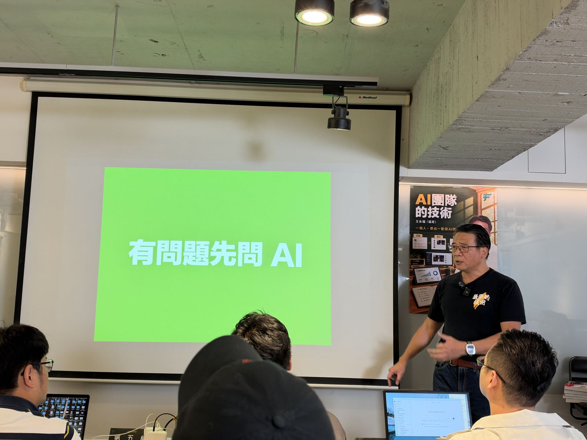
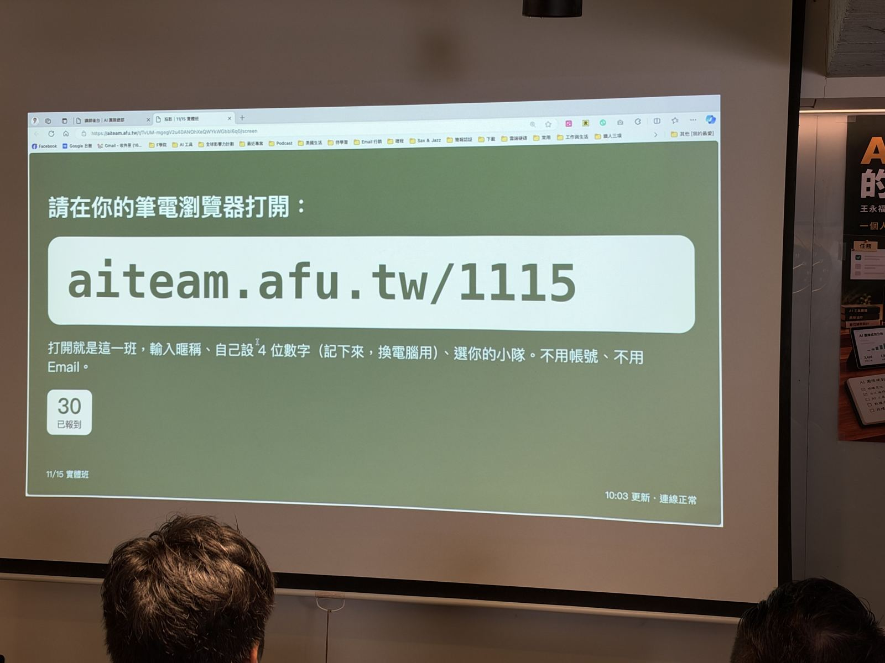
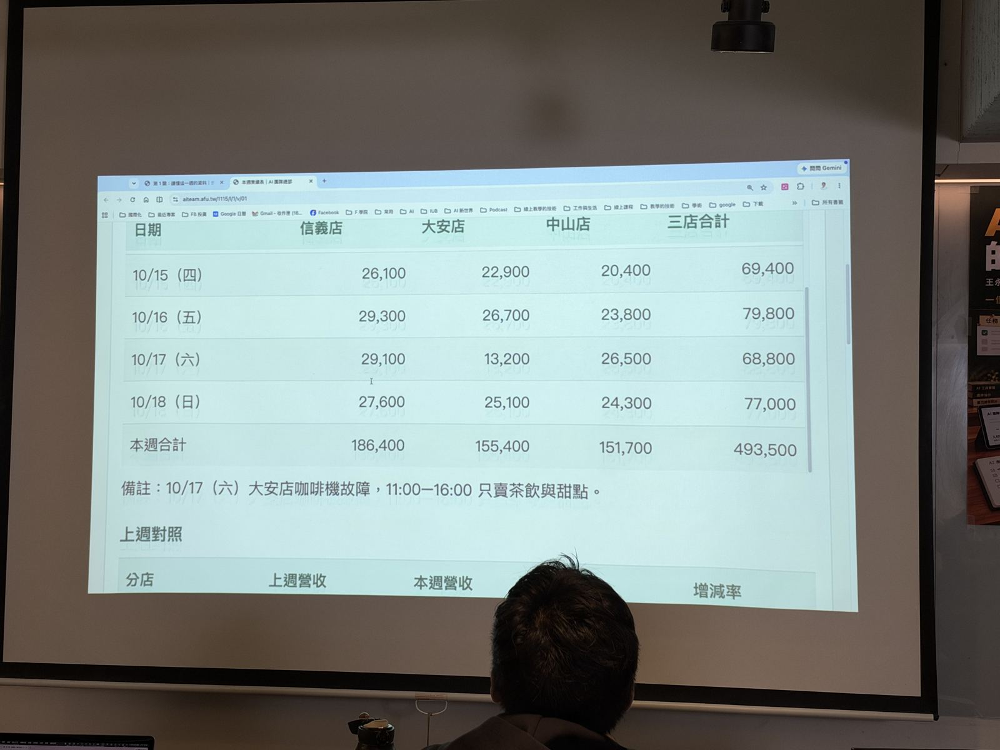
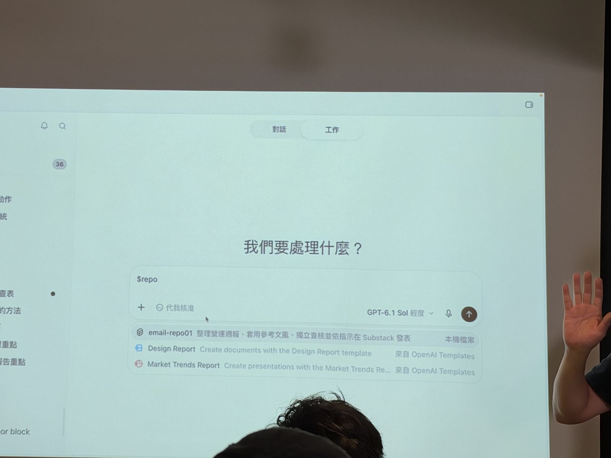
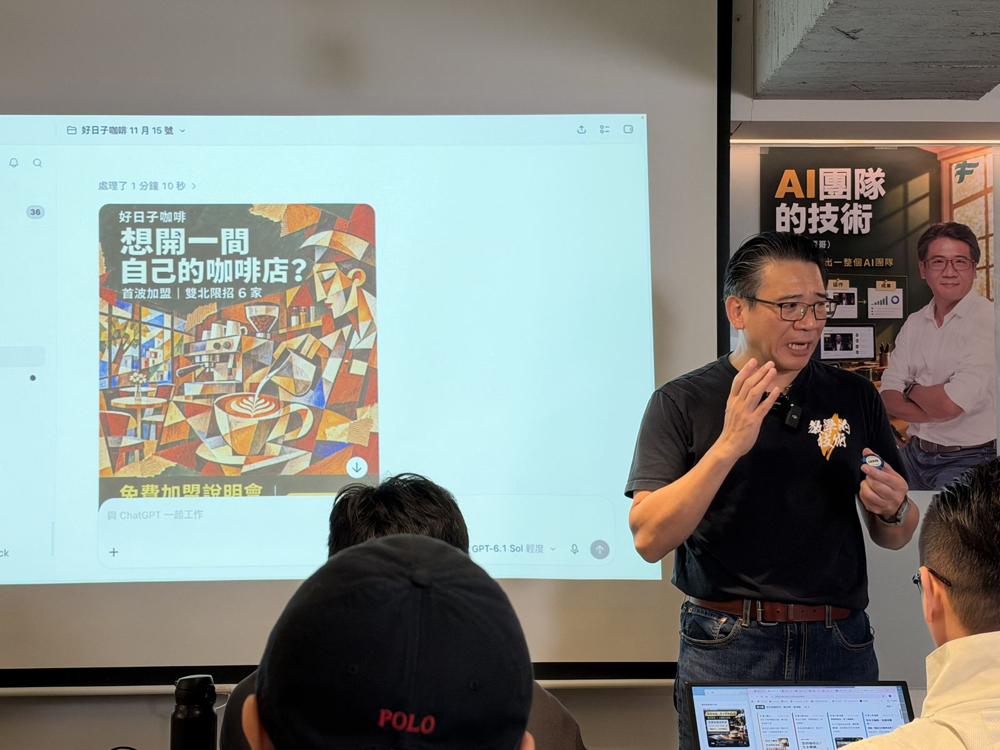
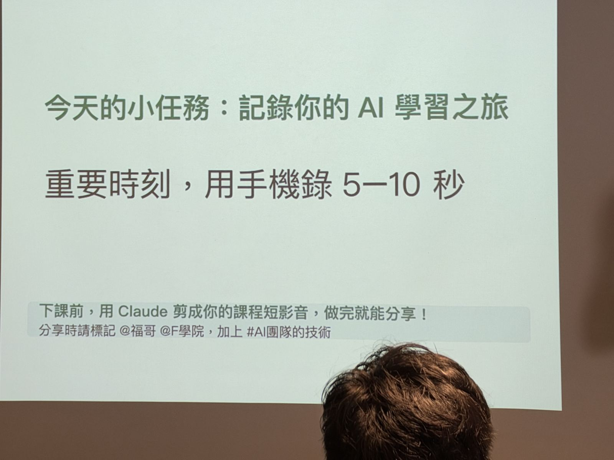
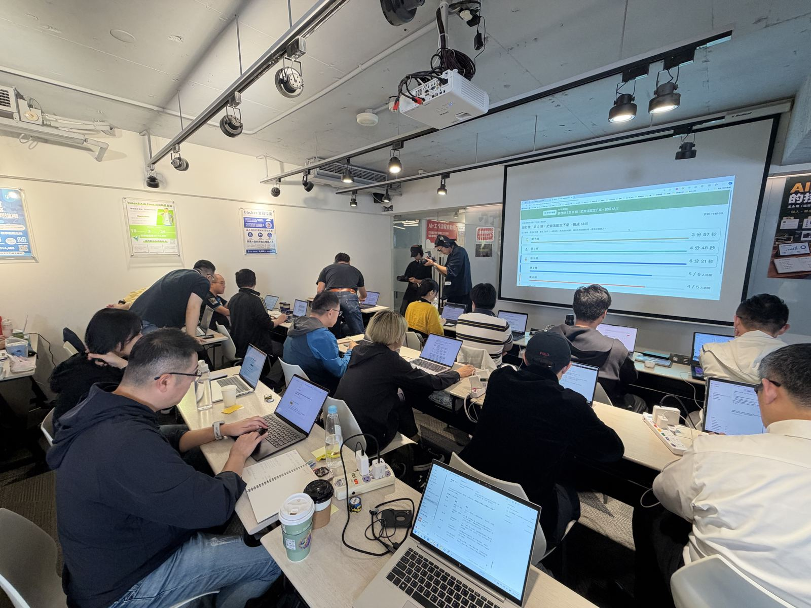

會不會，我們把 AI 用小了？
福哥開場先講自己。他從 1994 年就是電腦玩家，ChatGPT 在 2022 年 11 月 30 日推出，他 28 天後就用它完成了一集專訪。接著他丟出一個問題：會不會我們把 AI 用小了？
他的看法是，大家用的 AI 能力其實差不多，差別在於使用的人敢不敢對它提出更多要求、交付更多任務。我們常常用自己的想像，限制了 AI 能做的事。
福哥的電腦玩家資歷，從 1994 年開始。
ChatGPT 推出後，他完成第一集 ChatGPT 專訪的時間。
AI 使用的四個階段
福哥把 AI 的用法分成四階。大部分人停在前兩階：會問 AI、會叫 AI 寫，但事情最後還是自己做。這堂課的目標，是把大家帶到第 4 階。
- 第 1 階40%你問 AI 答
- 第 2 階36%你說 AI 寫
- 第 3 階19%你說 AI 做
- 第 4 階5%你是專案總監AI 團隊達成目標，今天的目標
76% 的人停在前兩階。數字取自福哥課堂投影片，長條以第 1 階為 100%。
第 4 階是由人設定目標，AI 團隊自己分工協作、共享記憶、定時回報。今天的九道關卡，就是照著這四階一階一階往上走：先問 AI，再叫它寫，接著叫它做，最後由我當專案總監，帶著 AI 營運長、社群 AI 和共同大腦一起推廣加盟。
這堂課怎麼上

早上十點，投影幕上只寫了一句話：有問題先問 AI。接著每個人打開課程網址，關卡一關一關解鎖。題目是一家虛構的連鎖咖啡店「好日子咖啡」。每一關都從老闆王大福的一封信開始，我們從到職第一週的新人做起，一路做到專案總監。資料、任務、答案檢查都在網頁上，卡住了就問自己的 AI，不用等老師一個一個教。
我覺得這個設計最厲害的地方，是讓「學」和「做」變成同一件事。
闖關
任務切成小步驟，每一關都有明確的目標，系統當場檢查答案，對了就往下走。
立即回饋，不會越學越模糊分組
全班分成小隊，我擔任第三小隊組長。大家一起看資料、討論答案，作業貼上看板，也能看到別隊怎麼做。
互相看、互相學做中學
沒有長篇講解，先動手讓 AI 做出成果，再回頭理解為什麼這樣做有效。
一天下來，手上有作品今天闖過的關卡
九道關卡分成四個等級，每一關都比上一關多交給 AI 一點。從讓 AI 讀懂資料，到讓 AI 自己動手，再到當上專案總監，帶著一支 AI 團隊推廣加盟。
- 1
讀懂這一週的資料
讓 AI 讀業績表、白板、顧客意見，答對題目，再用對的口吻向總經理報告。
- 2
第 1 期員工週報
把業績、週會逐字稿、顧客意見交給 AI，整理成一份週報。
- 3
寫得像你自己
請 AI 換成胡適白話文的語氣改寫。說話有溫度，事項有重點。
- 4
叫 AI 自己去開電子報
透過 Codex，讓 AI 自己把文章發布到 Substack。
- 5
把做法固定下來，做成 skill
把「週報到電子報」寫成 Skill，下次換上新資料直接叫出來用。
- 6
消化加盟辦法，寫文案、做海報
讀法務版加盟辦法，做出兩百字文案和海報，不做沒確認過的承諾。
- 7
共同大腦
建一個所有 AI 開工前都先讀的資料夾。
- 8
任命 AI 營運長
請 AI 當營運長，每天看報表、分派工作，先交出加盟推廣的分工計畫。
- 9
開一個練習社群
讓社群 AI 在 FB 開一個加盟練習社群，放上文案和海報，標明是課程練習。
- 10
等老師開放
老師一開，按鈕就會亮。




共同大腦：讓好幾個 AI 做同一個專案
做到後面我發現一個問題。每換一個 AI，就要重新交代一次：這是什麼案子、資料在哪、哪些數字不能亂寫。AI 一多，每個 AI 知道的東西都不一樣，很容易各說各話。
共同大腦就是解法。把專案的資料和規則整理在同一個資料夾，不管哪個 AI 開工，都先讀這個資料夾，再開始做事。今天這個資料夾是 Codex 幫我建的。
START-HERE.md新 AI 的入口，告訴它先讀什麼AGENTS.md所有 AI 都要遵守的規則wiki/整理過的知識，附索引raw/原始資料，例如加盟法務文件，不能改log.md誰改了什麼，只能追加
這個架構參考 Andrej Karpathy 提出的 LLM Wiki。不讓 AI 每次都從頭讀所有原始資料，而是維護一套會持續更新、互相連結的知識庫。它分成三層：
原始資料
保存原文，不修改。新版本另存新檔。
知識整理
AI 歸納成 wiki，每頁都連回原文。
規則
規定 AI 怎麼讀、怎麼更新、怎麼引用。
AGENTS.md 裡的幾條規則，我覺得是讓多個 AI 能一起工作的關鍵：
- 談到費用、日期、法律條款，一定要回查原文。
- 資料互相矛盾時，保留差異，請人確認，不自己判斷。
- 不編造網址、QR code、費用或解約條件，缺什麼先問。
- 修改前先重讀現況，避免蓋掉別的 AI 做的修改。
- 對外發布前，一定要經過我確認。
課堂現場
福哥要我們在重要時刻用手機錄 5 到 10 秒，下課前剪成課程短影音。這三段是今天錄下來的畫面。
組長心得
以前學一個新工具，通常是先聽完一堂課，回家再自己試，試到一半就卡住。今天反過來，先做，做的過程中遇到問題就問 AI，問不出來就跟小隊討論。一天下來，每個人手上都有自己做出來的東西。
當組長也讓我多看到一件事。同樣一道關卡，每個人下指令的方式都不一樣，得到的結果也不一樣。互相看別人怎麼問 AI，本身就是很好的學習。
今天我也給自己找了點麻煩。早上本來應該用 ChatGPT 桌機版，我卻同時開了 Codex、瀏覽器版 ChatGPT 和 Claude 桌機版，三邊切來切去，特別忙，只能盡量跟上。但也因為這樣，到了共同大腦那一關，我特別有感：AI 越多，越需要一個大家都讀得到的大腦。福哥開場就說過，他自己是在一個介面裡讓三個 AI 一起討論、再彙整結果。我今天手忙腳亂的那套，正是他每天在用的做法的雛形。


今天最大的收穫，不是讓 AI 做更多事，而是學會怎麼把事情交給 AI，再讓不同的 AI 共用同一個大腦，下一次工作不必從頭開始。
Will，第三小隊組長
今天記下的三句話：
闖關作品 · 讓 AI 發布的電子報好日子咖啡｜第二週營運週報